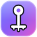

Generator struktur plików — od szablonu do repozytorium.
Projekt open source autorstwa tznsec · MIT
Jedno polecenie tworzy kompletną strukturę projektu — razem z manifestami, testami, plikiem README i historią git.
Rust, Node.js, React, Vue, Svelte, Astro, .NET, Flutter, Python, Go i inne.
Kopia wygenerowanego projektu przed każdą zmianą. Przywracasz jednym kliknięciem.
Dopisz własny szablon w JSON — bez ruszania kodu.
Zakładasz repozytorium i wrzucasz cały projekt jednym commitem.
Pięć wyglądów i cztery palety akcentu, przełączasz w ustawieniach.
Polski i angielski — cały interfejs, także nazwy szablonów i opcji.
Instalator rozpakowuje program, zakłada skrót w Menu Start i dodaje wpis na liście
zainstalowanych aplikacji. Potrzebujesz Windows 10 lub 11 — gitools korzysta
z WebView2, który jest już w systemie.
Wszystko, co robi okno, robi też terminal — bez okienek, bez myszki.
# lista szablonów
gitools list
# podgląd struktury bez zapisu
gitools preview node --name "moj-projekt"
# utwórz projekt
gitools init node --name "moj-projekt" -o git,readme
# migawki
gitools snapshots take ./moj-projekt
gitools snapshots list
# własne szablony JSON
gitools templates add moj-szablon.json
# GitHub
gitools github login
gitools github create moj-projekt -d "Opis"
gitools github push jan/moj-projekt ./moj-projekt -m "Pierwszy commit"Projekt to dwa crate’y i brak zależności od frameworka aplikacji — okno to WebView2, a interfejs to zwykły HTML, CSS i JavaScript w jednym pliku.
git clone https://github.com/tznsec/gitools.git
cd gitools
cargo build --release # -> target/release/gitools.exe
cargo test
# instalator (potrzebny już zbudowany gitools.exe)
powershell -ExecutionPolicy Bypass -File installer\build.ps1